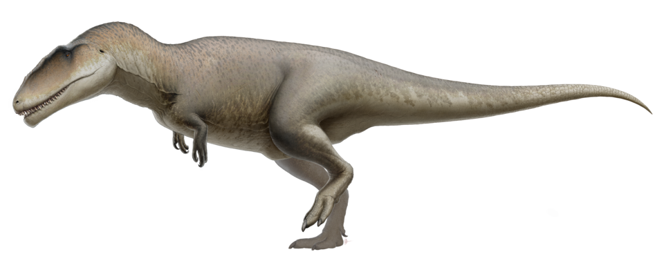

Giganotossauro
Giganotosaurus carolinii
Período
Viveu durante o período Cretáceo, há aproximadamente 99 a 97 milhões de anos.
Alimentação
Era carnívoro e provavelmente caçava grandes herbívoros.
Características
Era um dos maiores predadores terrestres conhecidos, com cerca de 12 metros de comprimento, crânio enorme e dentes cortantes.
Curiosidades
- Seu nome significa “grande lagarto do sul”.
- Seus fósseis foram encontrados na Argentina.
- Seu crânio tinha mais de 1 metro de comprimento.